Luzes de aviso • Luzes vermelhas indicam advertências importantes para o motorista ou uma falha grave no veículo. O veículo não deve ser posto em movimento com qualquer dessas luzes acesas. Caso uma delas acenda com o veículo em movimento, pare assim que as condições de trânsito oferecerem segurança e procure corrigir o problema. • Luzes amarelas indicam que algum
dispositivo auxiliar foi acionado ou,
que alguma falha leve está ocorrendo (água no combustível, restrição no
filtro
de ar, etc). Em caso de falha leve não é necessário parar o veículo
imediatamente, mas a falha deve ser corrigida assim que possível. • Luzes verdes/azuis indicam o acionamento de iluminação externa. O alarme sonoro, em conjunto com os instrumentos do painel, a tela de display e as luzes de aviso, formam um sistema de alarme multissensorial, ou seja, qualquer anormalidade em um dos sistemas indicados a seguir, pode ser identificada pelo alarme sonoro, e confirmada através dos instrumentos e das luzes de advertência. O alarme sonoro soa nas seguintes condições: • Pressão de óleo do motor baixa • Superaquecimento do motor • Pressão no sistema de freio baixa • Cabine destravada • Nível do líquido de arrefecimento baixo 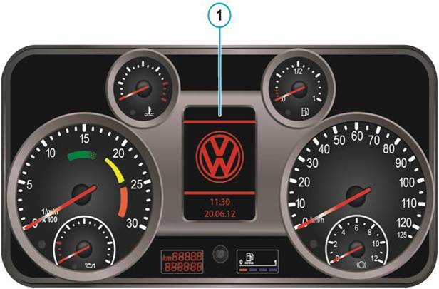
A tela de display no centro do painel (1) de instrumentos possui uma série de símbolos, permitindo a visualização e identificação rápida de qualquer anormalidade nos sistemas do veículo, sendo utilizada também com mostrador digital do computador de bordo.
Luzes de aviso do Display 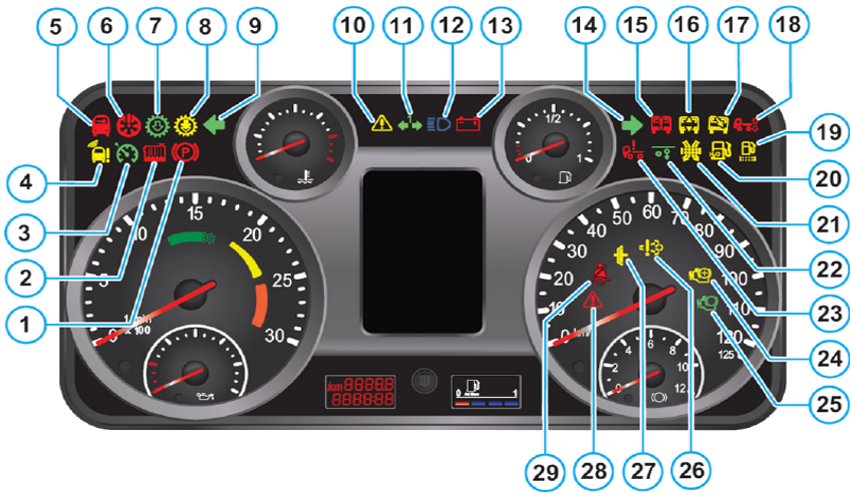
Funções das luzes de aviso
Sistema de
autoproteção do motor 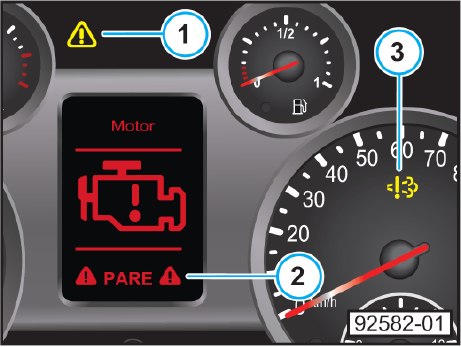 O motor eletrônico informa, por meio das luzes de aviso
no painel, possíveis falhas em seus componentes ou sistemas. A o símbolo No visor, aparecerá o ícone ao qual a falha está
associada e o alarme soará. A lâmpada (3) do sistema de auto diagnose de bordo (OBD) acende quando ocorre uma falha do sistema de controle de emissões, e quando o nível de NOx emitido pelo escapamento está fora do especificado.
• Superaquecimento do motor • Baixo nível do líquido de arrefecimento • Baixa pressão do óleo lubrificante • Todas as falhas relacionadas ao sistema de controle de emissões (OBD), com nível de NOx superior a 7,0 g/kwh
Módulo eletrônico de comando do motor EDC7 (A435) Descrição: Basicamente,
o módulo eletrônico de comando do motor EDC controla a injeção correta
de
combustível e a adaptação deste controle sob diferentes condições de
operação
e, com isso, o controle da potência e das emissões do motor. O módulo
de
comando (software / hardware) é aplicável para no máximo seis
cilindros.
Armazenamento de falhas: O sistema é automonitorado continuamente. Para este objetivo, ocorre uma inspeção de área ('Signal-Range-Check'). Nesse monitoramento, todos os sinais em um determinado padrão de tempo (determinado através de software) são consultados quanto à existência e plausibilidade. O próprio módulo de comando é verificado constantemente durante todo o tempo de operação do programa. O primeiro monitoramento ocorre sempre ao ligar a ignição (monitoramento da 'soma de verificação'). Caso ocorram falhas durante a operação, elas são registrados na memória de falhas e uma mensagem aparece no visor do motorista.
No armazenamento de falhas, ocorre: – Identificação do
código de falha (SPN) – Identificação do
tipo de falha (FMI) – Classificação da prioridade de falhas – Detecção da frequência
de falhas – Detecção das condições limite (duas condições de meio ambiente) para o momento da classificação de falhas. Falhas esporádicas são retidas inicialmente após seu primeiro desaparecimento por um contador de autorrecuperação, ou seja, é aplicado um determinado número de frequência, que a cada processo de inicialização é retornado em uma unidade. Caso a falha não mais ocorra e o contador alcance o valor zero, o bloco de falhas correspondente é apagado e avançado para outros blocos de falhas eventualmente existentes.
Dependendo da
avaliação de uma falha ocorrida, as
seguintes medidas são introduzidas automaticamente: – Comutação para uma função substituta apropriada para outra característica de dirigibilidade, ainda que limitada, a fim de possibilitar a continuação da viagem até a oficina MAN mais próxima. – Desligamento automático
do motor, desde que necessário por razões de segurança.
Assim
que ocorre uma falha, um bloco de falhas é registrado na memória de
falhas, ou
uma falha existente é atualizada.
Essa mensagem contém as
seguintes indicações: – Reconhecimento da falha = SPN ("Suspect Parameter Number") – Condição do ambiente 1 = SPN1 com o valor pertinente medido – Condição do ambiente 2 = SPN2 com o valor pertinente medido – Tipo de falha (causa) = FMI ("Failure Mode
Identification") – Prioridade da falha
= PRIORICADE ("Priority").
Dessa
forma, cada falha individual recebe uma prioridade, pois as falhas
diagnosticadas e registradas no módulo de comando podem trazer riscos
distintos.
O visor indica somente uma falha por vez: – Uma falha de alta prioridade tem preferência na indicação do visor – Uma mensagem com baixa prioridade não é mostrada ao motorista e a indicação atual permanece no visor
Memória de falhas OBD
A memória de falhas OBD é concebida como um módulo suplementar à memória de falhas existente. Falhas relevantes às emissões são sempre armazenadas. Primeiramente na memória de falhas 'normal' com o código de falha SPN, data e hora são registradas com atraso (estabilizado acima de 3 trajetos completos), e também na memória de falhas OBD com o código P padronizado de 5 dígitos. Ao mesmo tempo, com a armazenagem da falha na memória de falhas OBD, a luz de alerta de falha OBD (LIM) começa a piscar. Uma vez que uma falha referente às emissões no sistema de gases de escape não esteja mais ativa, a luz de alerta de falha OBD (LIM) permanecerá acesa por 3 trajetos completos ou 24 horas de operação do motor, antes de se apagar. Uma falha não mais considerada ativa após 40 ciclos de aquecimento ou 100 horas de operação, será classificada como "em ordem" e apagada da memória de falhas.
Ciclo de aquecimento: O
motor é operado até que a temperatura do líquido de arrefecimento tenha
aumentado pelo menos 22°C em relação ao estado na partida do motor, e
alcançado no mínimo 70°C.
Identificação dos conectores: 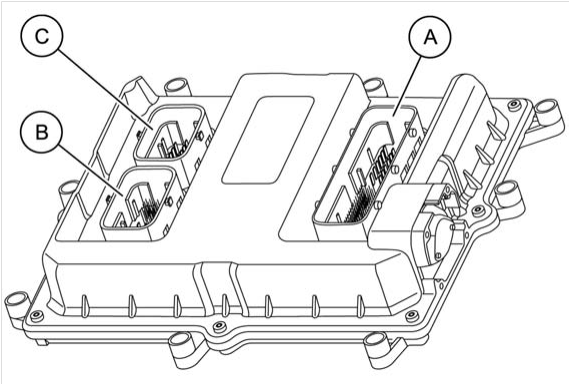 (A) Conector do Motor, 89 pinos (B) Conector do Veículo, 36 pinos (C) Conector do Injetor, 16 pinos
O módulo de comando está fixado no bloco do motor, para os motores de cilindros em linha.
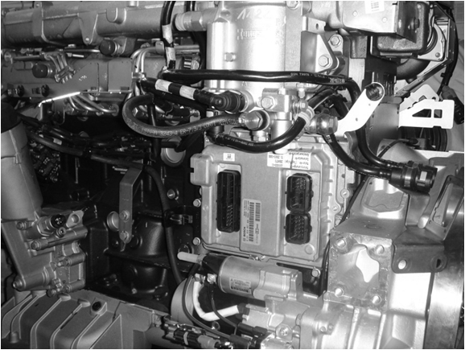
Tabela de ligação dos conectores
Módulo eletrônico de comando do motor EDC7 C32 Euro 5 (A435), localização dos pinos do conector A do motor: 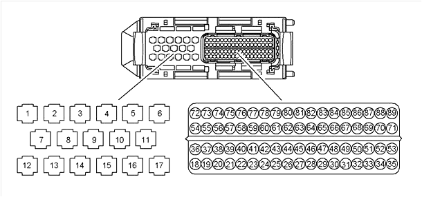
Módulo eletrônico de comando do motor EDC7 C32 Euro 5 (A435), localização dos pinos do conector B do veículo: 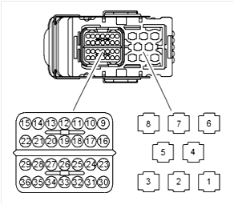
Módulo eletrônico de comando do motor EDC7 C32 Euro 5 (A435), localização dos pinos do conector C dos injetores: 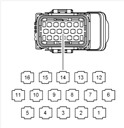
Bomba de alta pressão CP3.4 Descrição: A
bomba de alta pressão CP3.4 é uma bomba de pistão radial com 3
cilindros. Ela tem a tarefa de gerar alta pressão
necessária para a injeção e transportar um volume suficiente de
combustível em
todas as situações operacionais. Acionada pelo motor, a bomba de alta
pressão é
montada nos motores de cilindros em linha D08 na mesma posição como em
uma
bomba de injeção convencional. O acionamento da bomba de alta pressão é
feito
através de engrenagens. Através de uma polia, o acionamento das
engrenagens
dianteiras também aciona o alternador, a bomba de água e, se
instalados, o
compressor do sistema de ar condicionado, na parte dianteira do motor. O combustível é comprimido por uma bomba de pré-alimentação através das tubulações de combustível para o filtro de combustível (KSC) e, a seguir, através do ZME na "câmara de admissão" da bomba de alta pressão. A bomba de pré-alimentação se une à bomba de alta pressão através de flange. No lado da admissão da bomba de alta pressão, está agregada a unidade de dosagem ZME (MProp). A unidade de dosagem é um atuador para a regulagem da pressão do combustível no acumulador de alta pressão (Common-Rail). Atualmente, está aplicada a bomba de pistão radial CP3.4.
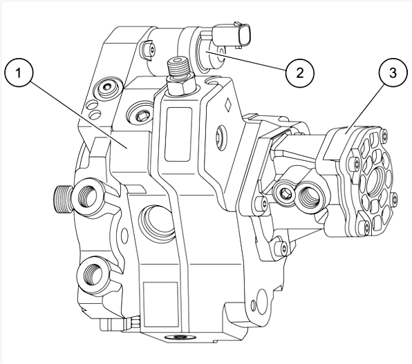
(1) Bomba de alta pressão (2)
Unidade de dosagem ZME (MProp) (3) Bomba de alimentação
A
bomba de alta pressão CP3.4 é uma bomba de pistão radial com 3
cilindros.
A
relação de ampliação para o virabrequim nos motores D08 é de 1:1,33, ou
seja, a
bomba de alta pressão gira mais rápido que o virabrequim.
Local de instalação: A bomba de alta pressão é acionada pelo motor e está montada na mesma posição de uma bomba de injeção convencional.
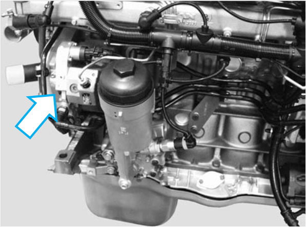
Unidade de dosagem ZME (válvula proporcional de combustível MProp) (Y332, Y356) Descrição: A unidade de dosagem ZME (MProp) é um atuador para
regulagem da pressão do combustível no acumulador de alta pressão
(Common-Rail). A unidade de dosagem se encontra no lado de baixa
pressão (lado
de entrada) da bomba de alta pressão e está fixada na carcaça da bomba
de
alta pressão CP3. A unidade de dosagem ZME é regulada por uma saída PWM (sinal modulado por largura de pulso): Ciclo de trabalho 100% ----------------------------------------------------------------------------- Unidade de medição fechada (descarga de volume nula). Ciclo de trabalho 0% ----------------------------------------------------------------------------- Unidade de dosagem aberta (descarga máxima). O ciclo de regulagem consiste no sensor de
pressão do Common-Rail, módulo de comando e unidade de dosagem.
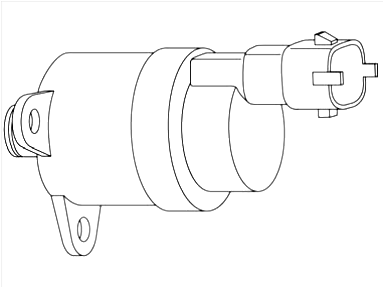
Local de instalação: A unidade de dosagem ZME (MProp) está fixada na carcaça da bomba de alta pressão.
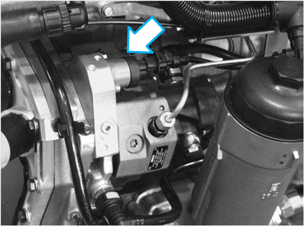
Tabela de ligação dos
conectores: 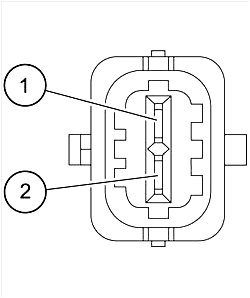
Acumulador de alta pressão (Common-Rail) Descrição: O nome "Common-Rail" deriva do tipo e função do acumulador de alta pressão. O combustível é injetado através desse conjunto acumulador (Common), que é, ao mesmo tempo, um distribuidor ou trilho (Rail) para um cilindro individual. Assim, o combustível está constantemente sob alta pressão, sendo removido somente no momento exato.
As funções do acumulador de alta pressão são: – Armazenar
combustível e – Evitar oscilações de pressão.
O
acumulador de alta pressão é um tubo fabricado em aço forjado.
Dependendo do
motor, ele tem diferentes diâmetros e comprimentos. Para evitar
oscilações de
pressão, é desejado o maior volume possível, isto é, o maior diâmetro
possível.
Entretanto, um volume pequeno favorece uma partida rápida do motor. Assim, é necessário um dimensionamento o mais exato possível do volume para o motor. A figura abaixo apenas sugere um exemplo de dimensionamento. No acumulador de alta pressão, também estão agregados à válvula de limitação de pressão (1) e o sensor de pressão do Common-Rail (2). O combustível segue desde a bomba de alta pressão, passando por uma tubulação, até o acumulador de alta pressão. Para cada cilindro existe uma conexão no acumulador de alta pressão, através da qual o combustível chega ao injetor, via uma tubulação.
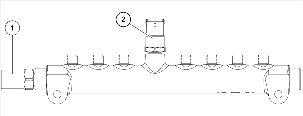 (1) Válvula de controle de pressão
(2) Sensor de pressão do Common-Rail Válvula de controle de pressão Descrição: A válvula de controle de pressão está montada no acumulador de alta pressão (Common-Rail) e funciona como uma válvula de segurança com limitação de pressão. A válvula de controle da pressão limita a pressão no Common-Rail. Com pressões muito altas, existe uma abertura de descarga livre. Na pressão normal de operação, uma mola comprime hermeticamente um êmbolo no assento da válvula, fazendo com que o Common-Rail permaneça fechado. Somente em caso de ultrapassar a pressão máxima do sistema, um pistão é pressionado contra uma mola através da pressão no Common-Rail. A
válvula de limitação de pressão consiste em dois êmbolos. No caso de
pressão
muito elevada no Common-Rail (cerca de 1.800 bar), o primeiro êmbolo se
move e
libera permanentemente uma seção transversal parcial, através da qual o
combustível pode escoar do distribuidor. A pressão do Common-Rail deve
ser
mantida constante em cerca de 700 a 800 bar. O motor continua
funcionando
e o veículo pode ser movido com volume reduzido de carga até a oficina
MAN mais
próxima. A válvula de limitação de pressão só volta a fechar se o motor for desligado e a pressão do Common-Rail cair abaixo de 50 bar, isto é, se for aberto uma vez, o 2.º estágio permanece aberto enquanto o motor funciona. Caso
a válvula de limitação de pressão não abra suficientemente rápido, ela
é empurrada
aberta, isto é, sua abertura é forçada. Para abrir a válvula de
limitação de
pressão, a unidade de dosagem de combustível (ZME) Mprop é aberta
através da
interrupção da alimentação de tensão, assim como é bloqueada a saída de
combustível através da injeção. A pressão do Common-Rail é
intensificada até
que a pressão de abertura da válvula de limitação de pressão seja
alcançada. Se
a abertura forçada não for bem sucedida, por exemplo, por causa de uma
válvula
de limitação de pressão mecanicamente emperrada, o motor é desligado.
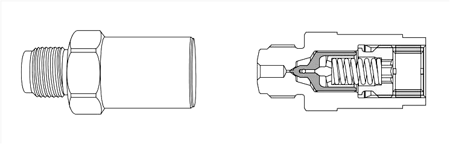
Local de instalação: A
válvula de controle da pressão está montada no acumulador de alta
pressão
(Common-Rail).
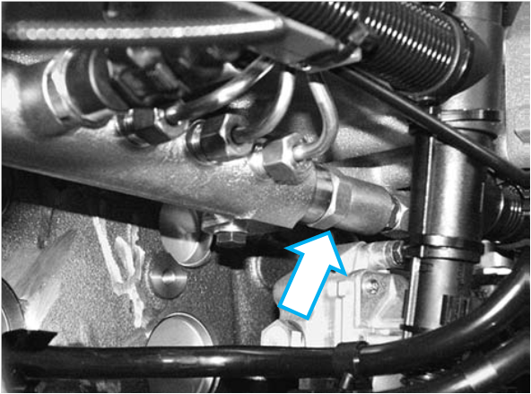
Sensor de pressão do Common-Rail Descrição: O
sensor de pressão do Common-Rail monitora a pressão de combustível no
acumulador de alta pressão (Common-Rail). O objetivo é garantir uma
pressão
pré-indicada conforme o ponto de operação no acumulador de alta pressão
(Common-Rail). O sensor de pressão do Common-Rail está montado no
acumulador de
alta pressão. A faixa de medição do sensor é de 0 a 1.800 bar. 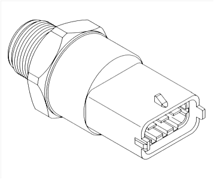
Curva característica do sensor: 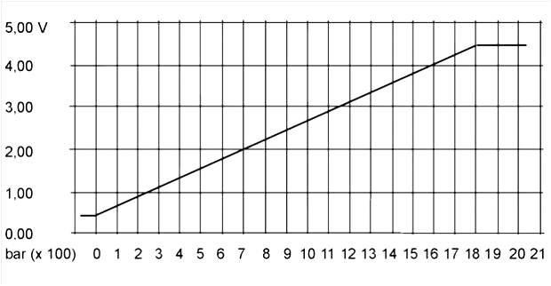 Local de instalação: O
sensor de pressão do Common-Rail está montado no acumulador de alta
pressão
(Common-Rail). 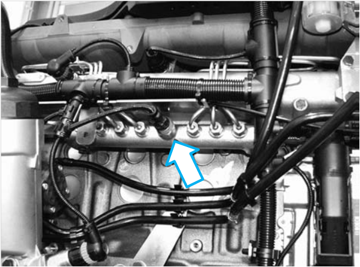
Ligação dos conectores: 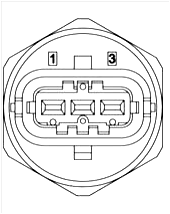
Injetor (Y341 - Y346)
Descrição: O injetor insere o combustível na câmara de combustão. O módulo eletrônico de comando do motor EDC 7 indica o tempo de injeção (duração de ativação da bobina do injetor para injeção anterior, principal e, eventualmente, posterior) e o ponto de injeção, e ativa a válvula eletromagnética do injetor de modo extremamente rápido. Através do induzido da válvula eletromagnética, o limitador de descarga da câmara de distribuição é aberto ou fechado. Na abertura do limitador de descarga, a pressão é reduzida na câmara de distribuição e a agulha de injeção se abre. No fechamento do limitador, a pressão aumenta na câmara de distribuição e a agulha de injeção é fechada. Portanto, o comportamento de abertura da agulha de injeção (velocidade de abertura e fechamento) é determinado pelo limitador de descarga na câmara de distribuição do injetor. Através da tubulação de retorno, o volume de fuga do injetor (fuga através do limitador de descarga e da agulha de injeção) é retornado ao tanque. O volume de injeção exato é determinado através da seção transversal de descarga do bico, do tempo de abertura da válvula eletromagnética e da pressão do acumulador.
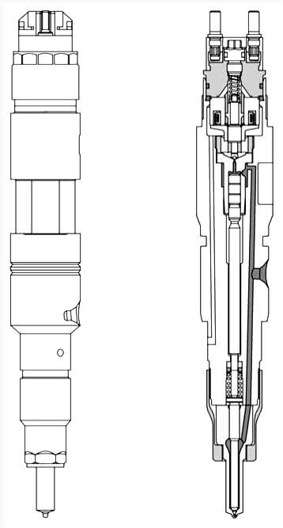
Local de instalação: Os
injetores são dispostos na mesma posição dos bicos injetores
convencionais, no
cabeçote. A figura ilustra um exemplo de instalação em um motor D28.
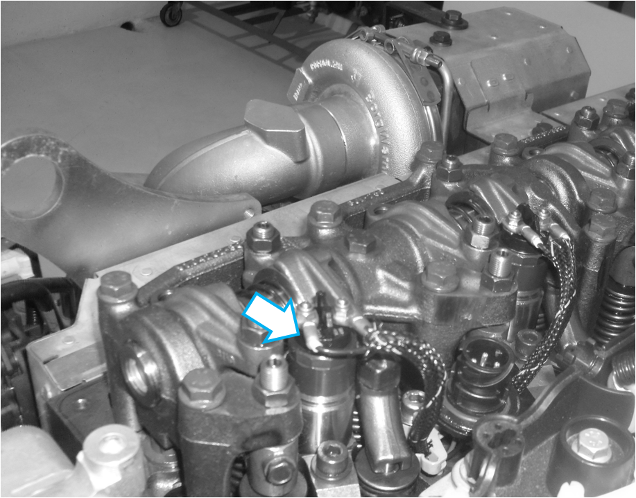
Sensor de rotação do virabrequim (B488) Descrição: Instalado
no volante do motor, este sensor mede o ângulo de acionamento da árvore
de manivelas (calculado). Esta informação é determinante para o ponto
correto de ativação
dos injetores de cada cilindro. A
engrenagem do sensor funciona como uma engrenagem. Por esta
razão,
este sensor de rotação será designado, daqui por diante, como sensor de rotação. A engrenagem é um componente do
volante do
motor e possui 60 – 2 = 58 furações (6x5 mm), que estão dispostas com
afastamentos
de 6°. Faltam duas furações para formar um vão. O vão serve para
determinar a
posição do ângulo do motor a 360° da árvore de manivelas (um giro da
manivela) e é
atribuído a uma posição definida da mesma, no 1º cilindro. A partida do
motor também pode ocorrer somente com o sensor da árvore de manivelas
ou somente com o
sensor do eixo comando. Na operação somente com o sensor da árvore de
manivelas, são
feitas injeções de teste no processo inicial na troca de gás em PMS e
na
ignição em PMS, já que o EDC só deve buscar a ignição correta em PMS
sem o sensor
do eixo comando. Se o módulo de comando reconhece uma reação de rotação
(ignição), o PMS correto é encontrado e ocorre a partida do motor,
funcionando
como se estivesse com ambos os sensores. O de rotação consiste em um ímã permanente e uma bobina. O ímã "move" com seu campo magnético a parte mecânica a ser girada e detectada, no caso o rotor, que está instalado no árvore de manivelas. Caso um orifício se mova no sensor e passe pelo mesmo, o fluxo de corrente é intensificado ou cresce entre os vãos. Isto gera uma tensão de indução na bobina do sensor, que é avaliada pelo sistema eletrônico de comando. A distância do sensor ao rotor é de aproximadamente 1 mm.
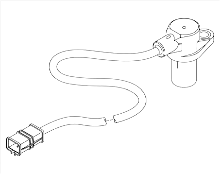 Local de instalação: O de rotação está montado no alojamento do volante do
motor. 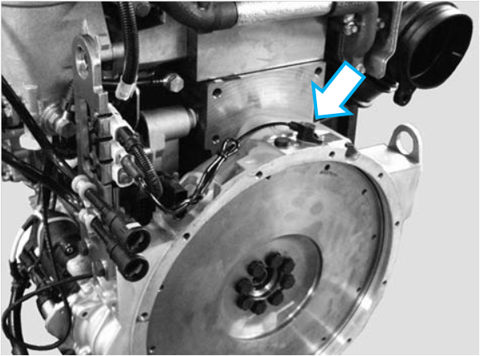
Ligação dos conectores:
Sequência de sinais: No pino 2, aparece a 1ª senóide positiva ao passar um material condutor de magnetismo.
Sensor de rotação do eixo comando (sensor de seguimento de rotação) (B489) Descrição: O
sensor de seguimento de rotação detecta a rotação do eixo comando do
motor e
transmite esta informação na forma de tensão de indução ao módulo de
comando. O eixo comando controla as válvulas de admissão e exaustão do
motor,
girando com a metade da velocidade da árvore de manivelas. Sua posição
determina se um
êmbolo se encontra no sincronismo de pressão ou no sincronismo de
exaustão ao
mover-se para o PMS. Esta informação não pode ser obtida a
partir da posição da árvore de manivelas durante o processo de partida.
Em
contrapartida, com o veículo em movimento, a informação gerada na
árvore de manivelas
pelo sensor de rotação é suficiente para determinar a
posição do
motor. Isto significa que, em caso de falha do sensor de rotação no
eixo
comando com o veículo em funcionamento, a posição do motor ainda
continua a ser
reconhecida pelo módulo de comando. A engrenagem do sensor é executada
como uma
engrenagem de seguimento, e é acionada pelo eixo comando. Por esta
razão, esse
sensor de rotação será designado, daqui por diante, como sensor de
seguimento
de rotação. A engrenagem também é denominada sensor de fase. O sensor
possui
uma marca de fase por cilindro (por exemplo, 6 marcas em motores de 6
cilindros, ou 4 marcas em motores de 4 cilindros) e uma marca de
sincronização.
A marca de fase é um dente na engrenagem de fase. As marcas de fase são
divididas em distâncias uniformes através da engrenagem de fase. A
marca de
sincronização é uma marca adicional na engrenagem de fase, que se situa
compactamente atrás de uma das marcas de fase. Ela serve para
determinar a
posição do ângulo do motor dentro de 720° da árvore de manivelas. A
partida do motor
também pode ocorrer somente com o sensor do eixo comando ou com o da
árvore de manivelas. Na operação somente com o sensor da árvore de
manivelas, são feitas
injeções de teste no processo inicial na troca de gás em PMS e na
ignição em
PMS, já que o EDC só deve buscar a ignição correta em PMS sem o sensor
do eixo
comando. Se o módulo de comando reconhece uma reação de rotação (ignição), o PMS correto é encontrado e ocorre a partida do motor, funcionando como se estivesse com ambos os sensores. Na operação somente com o sensor do eixo comando, as correções de ângulo são armazenadas no módulo de comando, de modo que o ponto de injeção também possa ser determinado corretamente sem o cálculo exato do ângulo de acionamento através do sensor . Na estrutura e no modo de atuação, o sensor do seguimento de rotação se assemelha ao sensor de rotação para a detecção da rotação da árvore de manivelas. 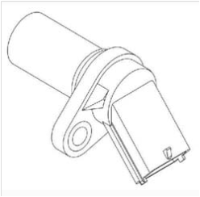 Local de instalação: 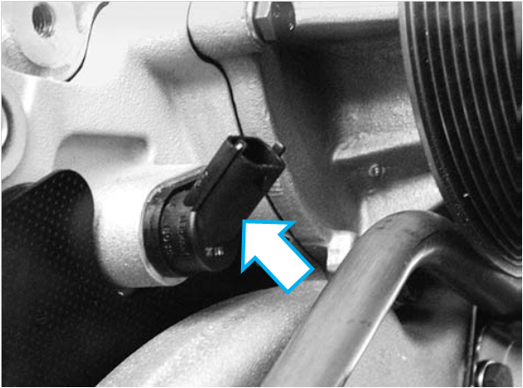 Ligação dos conectores:
Sequência
de sinais: No pino 2, aparece a 1ª senóide positiva ao passar um material condutor de magnetismo.
Sensor de pressão do óleo (B104)
Descrição: O
sensor de pressão do óleo é um instrumento de proteção do motor, uma
vez que
sua função é monitorar a pressão do óleo. A faixa de medição da pressão
se
estende de 0 (0,5 V) a 6 bar (4,5 V). 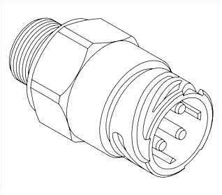
Curva característica do
sensor: 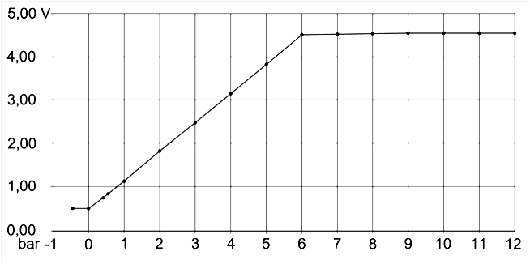
Local de instalação: O
sensor de pressão do óleo está montado na carcaça do filtro de óleo do
motor.
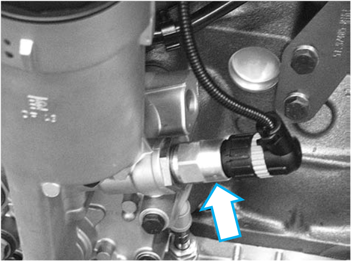 Ligação dos conectores: 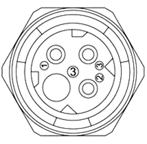
Sensor de pressão do combustível (B377) Descrição: O
sensor de pressão do combustível monitora a pressão do combustível no
fluxo de
entrada da bomba (no lado de baixa pressão). A faixa de medição da
pressão se
estende de 0 (0,5 V) a 15 bar (4,5 V). 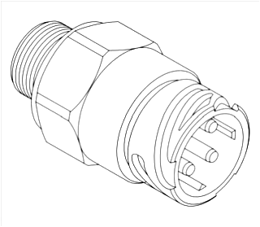
Curva característica do
sensor: 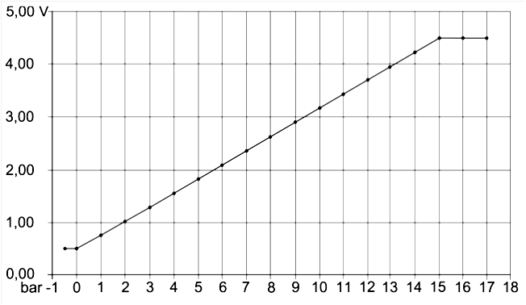 Local de instalação: O
sensor de pressão de combustível está montado na carcaça do filtro de
combustível.
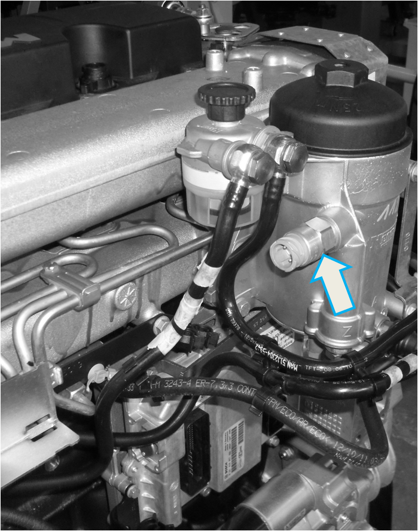
Ligação dos conectores: 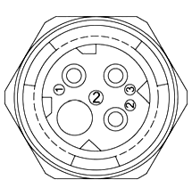
Sensor de pressão do turbo Bosch LDF 6T (B125)
Descrição: O sensor de pressão do turbo LDF 6T serve para a medição da pressão absoluta do turbo; Um sensor de temperatura está integrado ao sensor da
pressão de
alimentação. 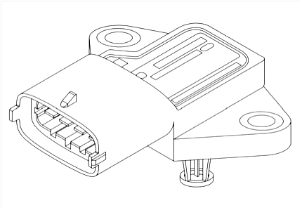
Curva característica do sensor: 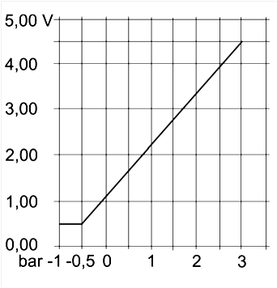
Local de instalação: O sensor de pressão do turbo está montado no coletor de admissão.
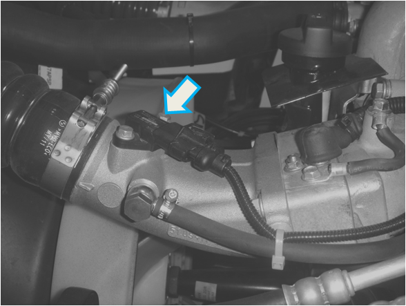
Ligação dos conectores:
Sensor da temperatura do ar do turbo (B123)
Descrição: O
sensor da temperatura do ar do turbo monitora o retorno dos gases de
escape
junto com o sensor de pressão do turbo LDF 6T (B623). Tabela de valores
medidos:
Local de instalação: O sensor de temperatura do ar do turbo está montado no
coletor de admissão.
Ligação dos conectores:
Sensor de temperatura do líquido de arrefecimento (B124)
Descrição: O
sensor de temperatura do líquido de arrefecimento é uma resistência
NTC.
Localizado no circuito de refrigeração, o sensor fornece ao módulo de
comando
informações sobre a temperatura do líquido de arrefecimento.
Dependendo
da temperatura do líquido de arrefecimento, são chamados diversos
campos
característicos do módulo de comando para a operação do motor.
Local de instalação: O sensor de temperatura do líquido de arrefecimento está instalado na tubulação de água do motor.
Tabela de valores medidos:
Ligação dos conectores:
Sensor de temperatura dos gases de escape (B561) Descrição: O sensor de temperatura B561 monitora a temperatura dos gases de escape para monitoramento do NOx. Reconhecimento do ponto de orvalho: Na
operação normal, a temperatura de trabalho da sonda lambda fica em
780°C. Após
a partida do motor, existe o risco da cerâmica da sonda lambda ser
danificada
ou destruída por conta da água condensada. Para evitar a formação de
gotas,
deve-se determinar a quantidade de calor captada (em função da corrente
e da
temperatura da massa dos gases de escape). Dependendo da quantidade de
calor
captado, ocorre a liberação do aquecimento da sonda lambda. Local de instalação: O sensor de temperatura dos gases de escape está instalado no tubo de escapamento.
Tabela de valores medidos:
Ligação dos conectores:
Sonda lambda (B322)
Descrição: A sonda lambda é empregada em motores com recirculação dos gases de escape, resfriados como método alternativo para a medição por meio do sensor de NOx. Este conceito de monitoramento nos motores com recirculação dos gases de escape se baseia na dependência primária das emissões de NOx, do teor de oxigênio e da massa de carga útil (massa de ar e massa dos gases de escape recirculados) no cilindro em pontos fixos de operação. A sonda lambda mede a diferença da concentração de oxigênio entre o ar ambiente e o fluxo dos gases de escape. Com isto, o sinal de medição fornecido pela sonda é uma medida direta para o teor de ar nos gases de escape. Através do aquecimento da sonda, uma análise do teor de ar já pode ocorrer para temperaturas dos gases de escape em torno de 150°C. A sonda lambda aqui utilizada (LSU 4.9) é uma sonda de banda larga, isto é, os valores lambda podem ser medidos continuamente entre λ = 0,65 e o ar. Isto é possível uma vez que "corrente pulsante" em curso quase linear serve como grandeza de medição ao módulo de comando. A sonda de banda larga ocupa duas células: uma de bomba e uma de sensor (célula de concentração Nernst). Com a corrente de pulso, sempre são bombeados muitos íons de oxigênio para a câmara de medição, até atingir um valor de tensão de 450 mV entre os eletrodos no canal de ar de referência e na célula de medição. A corrente de pulso é a grandeza de medição para o valor de lambda. Assim, um circuito de avaliação correspondente está em condições de avaliar a sonda lambda para o monitoramento da EGR-Rate. O EGR-Rate tem influência direta sobre os valores de NOx (um EGR-Rate muito baixo condiciona uma concentração muito alta de NOx, sendo colocado SPN 3930). Local de instalação: A Sonda lambda está instalada no tubo de escapamento.
Ligação dos conectores:
Válvula proporcional do turbocompressor com indução forçada de 2 estágios (Y340)
Descrição: A
válvula proporcional do turbocompressor regula a pressão do turbo em
motores do
tipo D08 com indução forçada de 2 estágios. A válvula proporcional do
turbocompressor é ativada pelo módulo de comando EDC com uma saída PWM
(sinal
modulado por largura de pulsação). Conforme este sinal, a válvula
reguladora de
pressão do turbo varia a pressão adjacente à dosagem de passagem
secundária do
turbocompressor e, com isto, a posição da válvula de passagem
secundária ou a
pressão de alimentação. Os valores limite do sinal PMW situam-se entre
0 %
correspondendo ao 'wastegate' aberto ao máximo (pressão de alimentação
mínima)
e 100 %, isto é, 'wastegate' fechado (pressão de alimentação máxima).
No caso
de funções falhas, o EDC reconhece um desvio de regulagem, reduz o
volume de
injeção e a rotação do motor. Na
indução forçada de 2 estágios, os gases de escape fluem a princípio
através de
um pequeno turbocompressor (estágio de alta pressão) e, a seguir, por
um
estágio maior, de baixa pressão. Uma vez que os dois turbocompressores
estão à
disposição para toda faixa de carga de rotação, a turbina de alta
pressão
pode ser dimensionada bem pequena. Através disto, o compressor de alta
pressão
pode dispor mais fácil e rapidamente o ar exigido em uma aceleração. No
fluxo
de massa mais alto dos gases de escape, a turbina de alta pressão é
interagida
parcialmente por meio do bypass. Deste modo, o nível de fuligem gerado
na
aceleração pode se manter mínimo, evitando uma sobrecarga da turbina de
alta
pressão. Na operação dinâmica, as vantagens da alimentação de dois
estágios
podem ser nitidamente percebidas. Paralelamente ao aumento do
fornecimento de ar, prevalecerá o melhor comportamento de resposta.
A válvula proporcional do turbocompressor está instalada na parte traseira do motor, próximo à carcaça do volante.
Atuador de retorno dos gases de escape do EGR (Y280)
Descrição: No retorno externo dos gases de escape resfriados, o fluxo principal dos gases de escape desvia uma pequena parte destes e os passa através de um trocador de calor especial. Através de um sistema de válvulas na parte dianteira do motor, os gases de escape resfriados do ar fresco são misturados daqui em diante na ala de admissão. Por isso, a temperatura de combustão permanece mais baixa. A formação de óxidos nitrosos (NOX) é reduzida. A ativação do atuador do EGR ocorre através do módulo de comando do EDC. O EGR é desligado em determinadas condições de temperatura; Por um lado, isso evita a condensação de ácidos sulfúricos em temperaturas frias do ar do turbo; e por outro lado, previne o superaquecimento do ar do turbocompressor através dos gases de escape de retorno. Para que a válvula do EGR aberta ou fechada possa ser reconhecida, há um contato 'Reed' instalado no atuador do EGR, que monitora a posição da válvula.
O
atuador de retorno dos gases de escape (atuador de EGR) consiste
basicamente
nos seguintes componentes: – Cilindro de ar
comprimido para o acionamento da válvula de retorno dos gases de
escape; – Válvula
eletromagnética para a ativação do cilindro; – Contato 'Reed' para sinal de confirmação da posição do êmbolo.
Local de instalação: O atuador de retorno dos gases de escape está instalado na parte superior traseira do motor, próximo a tampa de válvulas do cabeçote.
Ligação dos conectores:
Válvula proporcional E-AGR (Y458)
Descrição: A
válvula proporcional (Y458) ativa o atuador AGR de regulagem de posição
(E-AGR). O meio de trabalho é o ar em pressão mínima de operação de
aproximadamente 7 bar. Como sinal de ativação, é indicada uma grandeza
de
ciclo de trabalho do módulo de comando EDC. Local de instalação: A válvula proporcional E-AGR está instalada próxima à carcaça do filtro de combustível.
Ligação dos conectores:
Tomada de diagnóstico HD-OBD (X200)
Descrição: A tomada de diagnóstico HD-OBD de 16 pólos, padronizada conforme ISO 15031-3, possibilitará um sistema de diagnóstico para componentes relevantes aos gases de escapamento para praticamente todos os veículos.
Cabo adaptador HD-OBD:
Diagrama do módulo EDC
*** Na tomada de diagnóstico HD-OBD situa-se o cabo K no pino 3. Clique para imprimir o diagrama abaixo
|
|||||||||||||||||||||||||||||||||||||||||||||||||||||||||||||||||||||||||||||||||||||||||||||||||||||||||||||||||||||||||||||||||||||||||||||||||||||||||||||||||||||||||||||||||||||||||||||||||||||||||||||||||||||||||||||||||||||||||||||||||||||||||||||||||||||||||||||||||||||||||||||||||||||||||||||||||||||||||||||||||||||||||||||||||||||||||||||||||||||||||||||||||||||||||||||||||||||||||||||||||||||||||||||||||||||||||||||||||||||||||||||||||||||||||||||||||||||||||||||||||||||||||||||||||||||||||||||||||||||||||||||||||||||||||||||||||||||||||||||||||||||||||||||||||||||||||||||||||||||||||||||||||||||||||||||||||||||||||||||||||||||||||||||||||||||||||||||||||||||||||||||||||||||||||||||||||||||||||||||||||||||||||||||||||||||||||||||||||||||||||||||||||||||||||||||||||||||||||||||
 (1) amarelo acende quando uma falha leve
ocorre no veículo, acompanhado do ícone ao qual a falha está associada.
(1) amarelo acende quando uma falha leve
ocorre no veículo, acompanhado do ícone ao qual a falha está associada. (2) indica que uma falha grave está
ocorrendo. Pare o veículo imediatamente, assim que as condições de
trânsito
(2) indica que uma falha grave está
ocorrendo. Pare o veículo imediatamente, assim que as condições de
trânsito